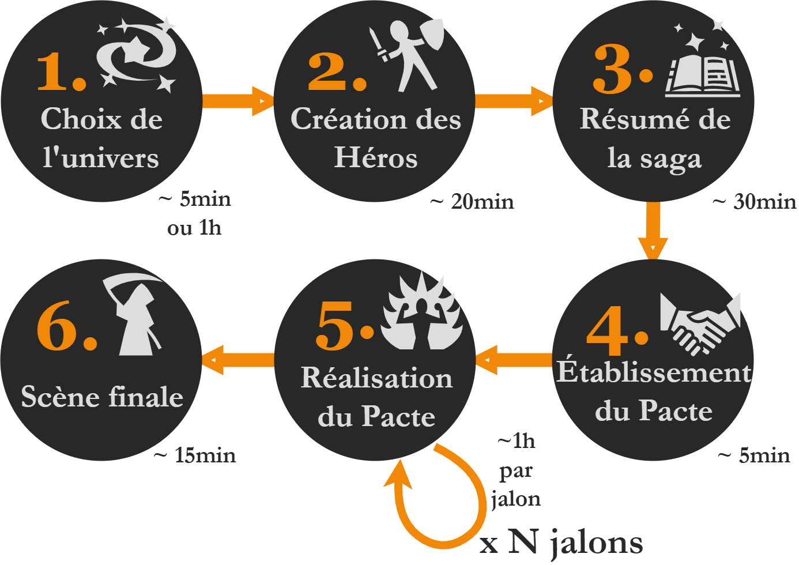
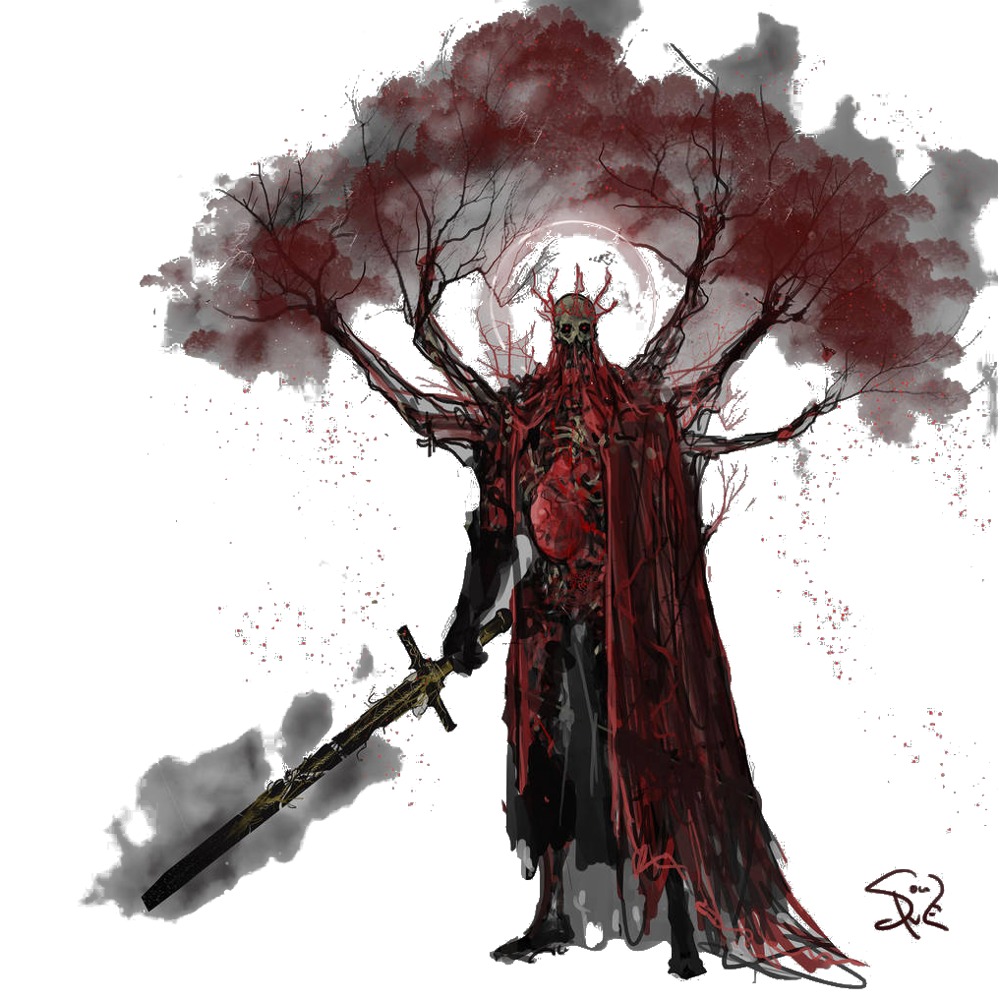

Ameres Victoires & Glorieuses Defaites
Dans ce court jeu de rôle, les joueuses incarnent les héros d’une saga épique et tragique, au dernier chapitre de leur périple. Ils ont traversé bien des aventures ensembles, et arrivent au terme de leurs quêtes respectives, où ils devront faire des choix cornéliens pour y apporter une conclusion.

Jeu de rôle ?
Si vous ne connaissez pas encore ce type de jeu, commencez par lire la définition du JdR de la FFJdR ou ce micro-JdR explicatif d’Epidiah Ravachol.
Voici quelques abréviations & conventions employées par la suite :
- JdR = Jeu de Rôle
- MJ = Meneuse ou Meneur de Jeu
- les joueurs & joueuses autres que la MJ seront désignés par « les Joueuses »
- PJ = Personnage d’une Joueuse, également nommé « Héro », qu’il soit masculin ou féminin
Ce dont vous aurez besoin
- une MJ + 2 à 4 autre Joueuses, et entre 2h et 4h devant vous
- ce jeu imprimé (au moins la table de résolution et les feuilles de personnage) et des crayons
- une dizaine de dés à 6 faces (d6)
- une dizaine de pions quelconques qui serviront à représenter les jalons du Pacte
Ce n’est pas nécessaire mais avoir 3 couleurs différentes de dés est idéal : 3 dés de base pour les jets, plus 3 par Joueuse pour les Atouts, plus une dernière poignée de dés représentant les Flashbacks. Si vous en avez assez, ces deux derniers types de dés peuvent être posés sur les feuilles de Joueuses tout le long de la partie.
Déroulement de la partie
Choix d’un univers
Commencez par établir ensemble un thème fort pour la partie, constitué d’1 à 3 mots clefs. Ce thème servira de contrainte créative et de gage de cohérence pour tous les éléments fictifs créés par les joueurs autour de la table. Voici quelques exemples :
- Bois, Foudre & Métal
- Sommeil, Eau & Masques
- Feu, Mort & Ténèbres
La MJ décrit ensuite aux Joueuses l’univers dans lequel se déroulera la partie. Il peut s’agir par exemple d’un univers existant d’œuvre de fiction.
Alternativement, vous pouvez aussi décider de créer un univers collectivement en début de partie !
Voici une manière d’organiser cette création collaborative en tant que MJ :
- prenez une feuille de papier, ou la mind map vierge fournie en aide de jeu, qui servira à prendre en note ce que vous allez définir collectivement sur l’univers, et une autre feuille blanche qui servira de carte de votre monde
- faites circulez cette carte entre les joueurs, en leur demandant d’y indiquez quelques éléments géographiques clefs : relief, lacs & mers, forêts, villes, ruines, axes de transport, monuments connus… Demandez à ce que chaque joueur ne la garde pas plus de 2min devant lui.
- simultanément, abordez tous ensembles quelques pierres angulaires de votre univers : climat, mythologie & dieux, niveau technologique / usage de la magie, factions, histoire récente, artefacts & trésors… Assurez-vous de répartir équitablement la parole entre tous les joueurs, afin que tous émettent des propositions. Un élément suggéré est adopté si personne n’émet de réserve. Les joueurs sont invités à exprimer leur soutien aux idées proposées, à rebondir dessus avec de nouveaux éléments, ou à proposer des alternatives quand certaines idées ne les séduisent pas.
Vous pouvez également faire des propositions en tant que MJ, mais votre rôle est principalement d’animer la réflexion collective pour éviter les temps morts, et faire office d’arbitre si besoin.
Création des Héros
Chaque Joueuse va incarner un héro ou une héroïne, aux capacités surhumaines et déjà renommé comme une légende vivante pour ses exploits.
Inscrivez sur votre feuille de personnage :
- son nom
- son apparence
- son Objectif : la quête du personnage, ce qu’il tente d’accomplir concrètement, en lien avec l’univers choisi. Un Héro peut avoir plusieurs objectifs ambitieux, mais au moins un doit être réalisable durant la partie, c’est à dire en l’espace de quelques jours dans l’univers du jeu.
En manque d’inspiration pour ce dernier ? Lancez 1d6 et reportez-vous à la liste suivante, en ignorant les lignes déjà obtenues * :
À plusieurs reprises dans ce jeu, vous aurez à lancer 1d6 puis à vous reporter à une table “en ignorant les lignes déjà obtenues”. La 1ère fois c’est très simple, reportez simplement le résultat de votre dé dans la table, puis cochez la ligne correspondante. La prochaine fois qu’une Joueuse fera un jet dedans, il “sautera” cette ligne pour déterminer la nouvelle ligne obtenue.
Si par exemple vous aviez obtenu un 3 sur votre dé, et que la Joueuse suivante obtient un 5, il lira ce qui se trouve dans la 6e ligne.
| 1 | la vengeance : … doit payer pour … |
|---|---|
| 2 | libérer le peuple … opprimé par … |
| 3 | découvrir la vérité sur légende de / les événements de … |
| 4 | retrouver le trésor perdu de … |
| 5 | lever la malédiction qui affecte … |
| 6 | découvrir la contrée mythique de … |
| 7 | ramener à la vie … |
| 8 | détrôner le tyran … |

La table suivante peut également vous donner des idées d’archétypes de personnages :
| 1 | la guerrière qui survécu à trop de batailles, vu trop de morts, et à juré de … |
|---|---|
| 2 | la (quasi ?) dernière survivante de son peuple, qui a tragiquement… |
| 3 | la voleuse au grand cœur, qui a un faible pour … |
| 4 | le héro qui a déjà sauvé mainte fois son peuple, tirée de sa retraite pour … |
| 5 | la paria, rejetée par les siens à cause de … |
| 6 | la veuve, qui a perdu son compagnon lors de … |
Flashbacks
Les Flashbacks représentent les exploits passés d’un Héro, lui conférant une aura légendaire et la capacité de provoquer l’apparition d’événements ou d’alliés inattendus. Ils sont aussi l’occasion pour les Joueuses de décrire les aventures passées de leurs Héros,
Le nombre de Flashbacks dont dispose un Héro est représenté par des cases à cocher sur la feuille de personnage. Cochez initialement 1 case Flashback indiquant que vous en disposez d’un.
À tout moment de la partie, en-dehors de la résolution d’une action, une Joueuse peut déclencher un Flashback. Elle réalise alors ces étapes dans l’ordre :
- elle raconte un haut fait, une prouesses héroïque de son personnage, et de quelle manière cet événement passé a une répercussion dans l’instant présent : savoir utile, intervention magique, allié opportun… La Joueuse a toute liberté pour décrire avec fracas l’arrivée, l’origine ou les motivations de nouveaux personnages, mais une fois votre description terminée la MJ aura tout contrôle sur eux.
- la Joueuse résume ce Flashback en quelques mots dans la section correspondante de sa feuille de personnage, dans l’emplacement à côté de la case à cocher. Celle-ci ne pourra plus être employée.
- la Joueuse dispose d’1d6 supplémentaire en bonus à son prochain jet de dé si son Héro tourne cet événement à son avantage
Un Flashback peut bien sûr être employé afin d’obtenir ce bonus, mais il peut aussi permettre aux Héros de débloquer narrativement une situation : un contact peut leur fournir une information utile, ou les introduire auprès de la bonne personne; la réputation du Héro peut lui ouvrir des portes ou dette refaire surface…

La table suivante peut vous fournir des idées de Flashbacks:
| 1 | un personnage du passé du Héro intervient : lui est-il redevable ou bien veut-il sa peau ? |
|---|---|
| 2 | le Héro a par le passé vaincu quelqu’un ou quelque chose, et obtenu en conséquence un titre lui servant de passe-droit |
| 3 | en reconnaissant le Héro un ennemi change de camp et se rallie à lui : quel événement passé explique cela ? |
| 4 | le Héro a été affecté par une malédiction, un sortilège ou une expérimentation high-tech qui a mal tourné |
| 5 | un mouvement de foule est déclenché lorsqu’on reconnaît le Héro : colère, terreur, mobilisation, vivas ? |
| 6 | introduisez une créature monstrueuse ou mythique : pourquoi est-elle attirée par le Héro ? |
| 7 | une puissance divine ou surnaturelle intervient : pourquoi vient-elle en aide au Héro ? |
Résumé de la saga
La partie commence par une séquence « en avance rapide », tel un « résumé des épisodes précédents » d’une série TV. Chaque joueuse prend la parole pour narrer comment son Héro a obtenu un de ses Atouts.
Un Atout est un objet de grande valeur sentimentale rendant le Héro redoutable, ou un personnage l’accompagnant dans sa quête. Cet Atout a une histoire et a tant de valeur eux yeux du Héro que le perdre serait une tragédie.
Cette séquence sert aussi d’entrée en scène au Héro !
Dans cette phase, la narration n’est pas à la première personne : chaque joueuse décrit sa scène d’un point de vue extérieur, à la troisième personne.
La séquence de chaque joueuse ne doit pas dépasser 2 minutes, mais les joueuses peuvent prendre tout leur temps pour y réfléchir au préalable, afin d’avoir une narration fluide.
La séquence peut très bien se composer de micro-scènes s’enchaînant : un oracle prédit au Héro son destin ; il affronte un puissant seigneur au combat ; il est enfermé dans des geôles ; durant son évasion, il découvre une puissante relique.
Vous pouvez vous inspirer des effets de style suivant :
| 1 | le Héro rassemble les éléments / ingrédients nécessaire à la confection de son arme / artefact / sortilège |
|---|---|
| 2 | le Héro remporte une compétition célèbre, et sa précieuse récompense |
| 3 | le Héro dérobe une arme à un puissant ennemi vaincu |
| 4 | le Héro se voit remettre un artefact d’un puissant personnage (dieu, légende vivante, sorcier…) |
| 5 | le Héro extrait une arme d’un coffre / tombeau / socle où elle était enfermée depuis des siècles |
| 6 | le Héro sauve un personnage et/ou sa famille de la mort, gagnant sa gratitude éternelle |
| 7 | le Héro sort de l’ombre et révèle sa présence par une action d’éclat |
| 8 | le Héro s’extrait d’une carcasse de créature ou de véhicule |
| 9 | le Héro est acclamé par la foule |
Suite à la séquence, les autres Joueuses peuvent poser des questions pour clarifier les événements, si elles le souhaitent.
La Joueuse conclut ensuite en décrivant ses 2 autres Atouts, puis passe la main pour qu’une autre Joueuse décrive l’entrée en scène de son Héro.
En manque d’inspiration pour vos Atouts ? Lancez 1d6 et reportez-vous à la liste suivante, en ignorant les lignes déjà obtenues :
| 1 | le Héro est accompagnée de son jeune disciple surdoué en … |
|---|---|
| 2 | le Héro possède un très vieux livre antique, précieux mais maudit, qu’elle a juré de ramener à la bibliothèque de la Citadelle au péril de sa vie |
| 3 | la foi de le Héro en son dieu lui procure le pouvoir d’invoquer un élément : foudre, vague de feu, tempête… |
| 4 | née d’un peuple esclave, le Héro est leur élue : elle a le don de faire entendre sa voix dans leur tête et a juré de les libérer |
| 5 | le Héro est une redoutable guerrière au code de l’honneur strict comme le Bushido |
| 6 | en jurant de servir le démon-dieu … le Héro a obtenu la capacité de pouvoir hypnotiser quiconque d’un regard |
| 7 | le Héro possède une arme gigantesque / volante / les deux : c’est la dernière restante du clan et son maître lui a confié |
| 8 | l’amulette que lui a donné sa mère, son dernier souvenir d’elle, permet à le Héro de donner vie à la matière inerte |
| 9 | le Héro est accompagnée d’un destrier / compagnon animal magique |
| 10 | pour garantir la survie de … le Héro porte une malédiction: tout ce qui est vivant tombe en cendres lorsqu’elle le touche |
Le Pacte
Dans les exemples fournis, les jalons du Pacte ont tous la même structure. Il aussi possible de décomposer la quête en phases plus variées. Par exemple pour trouver le trésor de … en 4 étapes : trouver des archives qui le mentionnent ; trouver un savant pour les traduire et situer le lieu ; le convaincre de le faire ; se rendre sur place.
La MJ définit le Pacte qu’il va sceller avec les Héros, c’est-à-dire une mission épique précise. Il doit donner lieu à des scènes héroïques, mais gardez en tête qu’il doit être réalisable en une session, quitte à accélérer le rythme de l’histoire.
Chaque Pacte doit pouvoir être accomplis en un nombre d’étapes fixé, qui correspondra au nombre de jetons de jalons du Pacte. La MJ choisit leur nombre, selon la durée qu’elle souhaite donner à la partie. Pour une première partie, prennez-en 7 moins le nombre de Héros.
Vous pouvez, au choix, lancer 1d6 dans l’une des tables suivantes, ou bien simplement vous en inspirer :
| d6 | Pactes pour une partie “musclée” |
|---|---|
| 1 | Mettre à terre les Colosses Vivants |
| 2 | Assassiner les responsable de la tragédie de … |
| 3 | Occire les commandants de l’armée … |
| 4 | Capturer les dieux élémentaires protecteur de … |
| 5 | Faire prisonnier les chefs de la résistance à … |
| 6 | Libérer les villes occupées par … |
| d6 | Idées de pactes |
|---|---|
| 1 | Rassembler les os du dernier des dragons, transformés en reliques vénérées / armes / artefacts magiques |
| 2 | Convaincre les anciens héros de sortir de leur retraite pour affronter … |
| 3 | Obtenir l’approbation / le vote des seigneurs pour appuyer votre demande au roi de … |
| 4 | Rassembler les informations suffisantes (manuscrits, témoignages…) pour accomplir le rituel de … |
| 5 | Retracer le parcours du légendaire …, étape après étape, pour comprendre qui l’a amené à … |
| 6 | Obtenir les aveux des commanditaires de … |

Le Pacte idéal doit, à terme, permettre aux Héros d’accomplir chacun leurs Objectifs. Il n’est néanmoins pas toujours simple d’en trouver un qui corresponde parfaitement, surtout durant le cours laps de temps entre la création des Héros et cette phase d’exposition du Pacte.
C’est pourquoi le Pacte doit être énoncé diégétiquement par un personnage puissant de l’univers, capable de recruter les Héros car il est capable d’assouvir leurs désirs secrets. Voici quelques suggestions :
- un mystérieux et riche commanditaire
- un puissant sorcier
- un djinn
- un dieu (de la Mort, de la Ruse, de la Justice…) mettant au défi les Héros, ou manigançant contre un autre dieu
- un ange déchu ou un démon tentateur
- un esprit élémentaire
- un fantôme
En tant que MJ, décrivez alors une courte scène, dans un lieu majestueux ou inattendu, ou vous incarnez ce puissant personnage. Proposez aux Héros votre Pacte, ce qu’ils doivent accomplir pour vous et vos conditions, en échange de quoi ils obtiendront chacun ce qu’ils cherchent.
Vous pouvez lâchez théâtralement au centre de la table les jetons symbolisant les jalons du Pacte. Ils seront retirés un par un par les Joueuses, au fur et à mesure qu’elle accomplissent ces étapes.
Jets de dés
Dans ce jeu, seules les actions d’ampleur font l’objet d’un jet de dés. La MJ est seule juge de ce qui constitue ou non une telle action, mais de manière générale les Héros étant au sommet de leur puissance et de leur renommé, il n’est pas nécessaire de faire de jet pour les situations présentant un faible challenge pour eux.
Lorsqu’un Héro tente d’accomplir une action d’ampleur, la Joueuse lance 3d6 blancs. Si son Héro emploie certains de ses Atouts pour accomplir cette action, elle ajoute 1d6 par Atout employé.
Une fois les résultats obtenus, la Joueuse place ensuite 3 dés dans la partie supérieure de la table de résolution.
Le dé placé au sommet de la table détermine:
- le résultat de l’action : réussite sur un 5 ou un 6, échec sinon
- dans quelle colonne de la table placer les autres dés : en cas de réussite les autres d6 doivent être placés tous à gauche dans la table, et tous à droite en cas d’échec.
La deuxième ligne détermine les Effets secondaires de l’action :
- si un dé de valeur 6 est placé ici :
- en cas de succès de l’action entreprise (colonne gauche), il s’agit d’une réussite ! À la Joueuse de décrire comment son Héro accomplit son objectif.
- en cas d’échec de l’action (colonne droite), il s’agit d’un coup d’éclat mettant le Héro en valeur. Peut-être emploie-t-il une tactique spectaculaire ? Peut-être qu’un Atout qu’il a employé lui évite le pire ? Quoi qu’il en soit, même si cela ne lui permet pas encore de réussir son entreprise, il doit être sous les feux de la rampe. En pratique, avant la description de la MJ du résultat de l’action, les autres Joueuses émettent leurs propositions, et la Joueuse ayant effectué le jet choisit parmi elles.
- si un dé de valeur 4 ou 5 est placé ici, en cas de succès de l’action entreprise, il s’agit une réussite tragique. La MJ décrit comment le Héro arrive à ses fins, et les terribles conséquences inattendues qui en découlent.
- si le dé est de valeur 1, 2 ou 3, il s’agit d’une complication : que l’action soit réussie ou non, quelque chose tourne mal… Selon la colonne, la MJ ou n’importe quelle autre Joueuse autour de la table a la parole pour décrire cette complication.
La troisième ligne révèle de potentielles Opportunités. Selon si l’action est réussie à la valeur du dé placé ici :
- l’action peut se révéler ouvrir une porte vers la réalisation du Pacte. À la MJ d’expliquer alors comment cela avance les PJs rapidement vers une opportunité d’accomplir un jalon du Pacte.
- l’action entreprise peut également donner une opportunité à un autre Héro : diversion, attaque combinée, bluff… la Joueuse explique quelle synergie est créée avec quel autre Héro.
- si le Héro a employé un Atout, celui-ci peut être perdu : détruit, volé, incapacité… à la MJ de décider.
- la Joueuse peut obtenir un nouveau Flashback, et coche une case correspondante sur sa feuille de personnage
- enfin le Héro peut être incapacité : assommé, immobilisé, paralysé, inconscient… La MJ explique ce qui lui arrive.
Une fois les dés lancés et répartis par la Joueuse, la MJ décrit le résultat de l’action et distribue la parole. Il peut être stratégique de choisir qu’une action échoue afin d’obtenir des avantages présents dans la colonne de droite.

Si jamais un Héro meurt en cours de partie, il pourra tout de même aider ses camarades par-delà la mort : une fois par demi-heure, il peut accorder un bonus d’1d6 supplémentaire au jet d’une Joueuse.
Scène finale
Lorsque le dernier jeton de jalon du Pacte a été défaussé, la MJ introduit la Scène finale.
Comme promis au début de la partie, cette scène doit être l’occasion pour tous les Héros d’accomplir leurs Objectifs. La MJ décrit le lieu, les personnages présents et brièvement comment les Héros sont arrivés ici pendant cette ellipse temporelle.

Ensuite, chaque Joueuse va miser secrètement pour la résolution qu’il souhaite pour cette scène parmi les choix suivant :
| 1 | Tous les Objectifs sont accomplis, mais deux Héros y laissent la vie.\ |
|---|---|
| Ils sont tirés au hasard parmi les Joueuses ayant choisi cette option | |
| 2 | un Héro perd la vie, tiré au hasard parmi les Joueuses ayant choisi cette option. \ |
| Les Objectifs des autres Héros sont accomplis. | |
| 3 | un seul Héro accomplit son objectif, tiré au hasard parmi les Joueuses, mais il y laisse alors la vie |
Une fois les votes révélés, c’est l’option de valeur la plus élevée ayant reçu au moins un vote qui l’emporte. On effectue alors le ou les jets aléatoires requis pour déterminer les Héros / Objectifs concernés.
Ensuite, en commençant par ces Héros, chaque Joueuse prend alors la parole pour décrire ce qu’il advient de son Héro au cours de cette scène et après, en complétant ce que le précédent vient de décrire.

Sources & remerciements

Amères victoires & glorieuses défaites est un jeu de Lucas Cimon sous licence Creative Commons Attribution 4.0 International.
- le diagramme a été réalisé avec draw.io - Apache 2.0 open-source license
- la plupart des illustrations proviennent du projet King’s Court de Ramirez de Souza et sont CC BY-NC-SA 3.0 : Stormchaser Proving Grounds, Elaina (Court Attire I), Royal Mistwalker, Coalescence of Immemorial Nightmares - Yodth, Schismatic Astronomer, Plague-ridden Sentinel et Lightless Conspirators
- les autres illustrations du jeu :
- crâne couronné issu de “Proverbial Philosophy in four series”, Martin Tupper, 1881
- motifs des dés : Brusheezy (bordures - flèches) - Brusheezy Standard License
- les icônes du diagramme proviennent de game-icons.net et sont toutes CC BY 3.0: Star swirl icon et Grim reaper icon de Lorc; Spell book icon, Shaking hands icon et Mighty force icon de Delapuite; Swordman icon de Cathelineau.
- les polices employées :
- FFF Tusj par Magnus Cederholm - Free for commercial use
- DampfPlatz par Paul Lloyd - Free for commercial use
Un énorme MERCI à mes relecteurs & playtesteurs : Matthieu, Simon, Cédric, Henri, Thomas, Arnaud, Ludovic, Mariel, Samuel. Ce jeu n’existerait pas sans vous, et il ne serait certainement pas aussi fun sans vos précieux retours !
Mes inspirations notables : Psi*Run de Meguey Baker pour sa table de résolution géniale; les jeux de rôle monopage pour la profusion de table aléatoires; le manga Berserk ainsi que les jeux vidéo Dark Souls et Shadow of the Colossus pour l’univers que j’avais initialement en tête pour le jeu.
Table de résolution
L'action est-elle réussie ?(MJ)
Effet ?
Opportunités ?
- Nom du hero
- Objectif
- Reputation
- Atouts
-
- Flashbacks
-
- Nom du hero
- Objectif
- Reputation
- Atouts
-
- Flashbacks
-
| Objectif | Atouts | Reputation | Hero |
|---|---|---|---|
v1.2